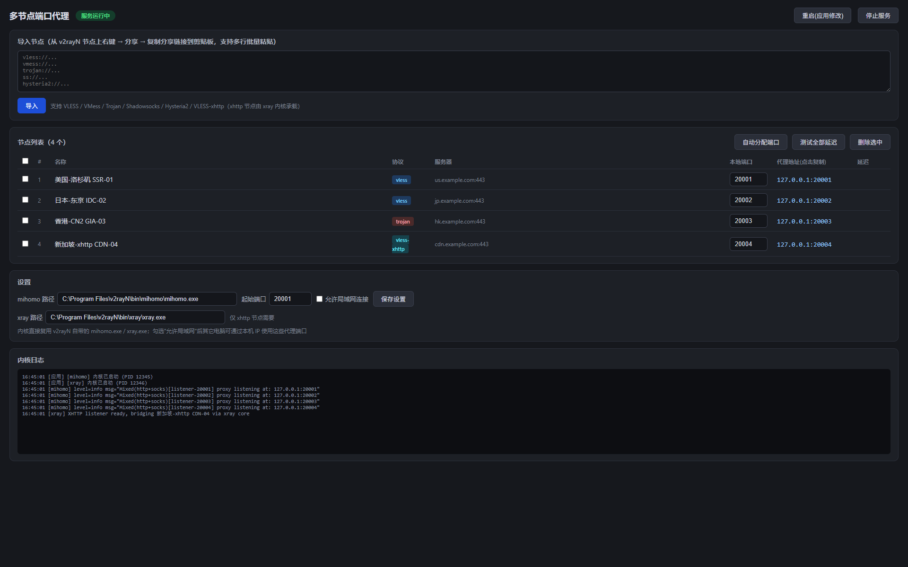

把多个代理节点分别映射到本机的不同端口，每个端口同时提供 socks5 / http，让指纹浏览器的不同环境可以同时走不同节点出口。
为「指纹浏览器多环境、每个环境一个独立节点」而生
每个节点独占一个本地端口，同一端口同时支持 socks5 与 http（mixed），互不干扰。
直接粘贴 v2rayN 的节点分享链接，支持多行一次导入，自动分配端口。
VLESS / VMess / Trojan / Shadowsocks / Hysteria2 / VLESS-xhttp 全覆盖。
常规协议走 mihomo；xhttp 节点自动改由 xray 承载并桥接，无需手动配置。
一键测试每个端口的真实连通性与延迟，节点状态一目了然。
不打包内核，自动探测 v2rayN 自带的 mihomo / xray，与 v2rayN 共存不冲突。
内嵌网页界面，以独立窗口弹出，体验接近原生桌面应用

单文件可执行程序，双击即用，无需安装
⬇ MultiPortProxy.exe（Windows 64 位）需自备 mihomo / xray 内核（可直接复用 v2rayN 安装目录下的）
开源不易，如果这个项目帮到了你，欢迎请作者喝杯咖啡 ☕
微信或支付宝扫一扫 · 感谢每一份支持 🙏